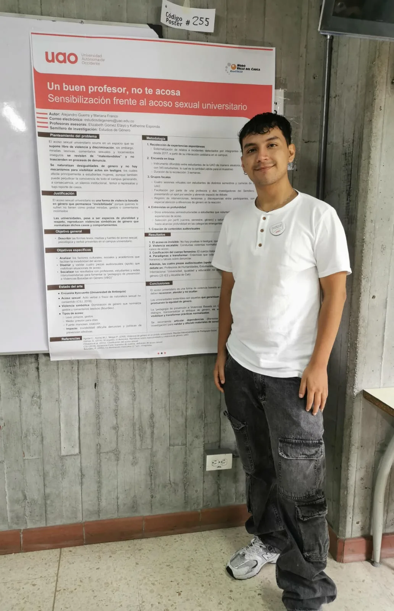
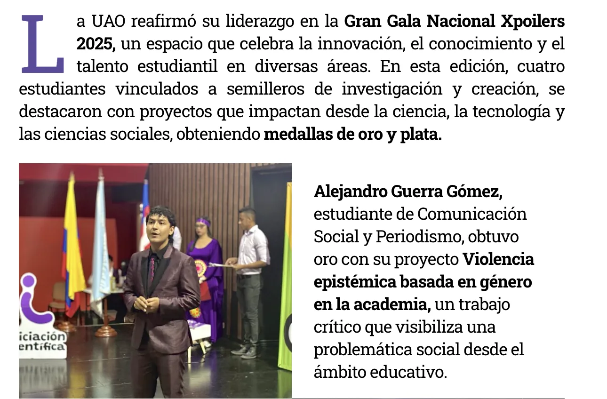

Comunicación para el cambio social
Redes sociales
Cobertura continua de proyectos para Fundación Herencia de Timbiquí, Asociación Colombiana de Juventudes y Plataforma de Juventudes, junto con alianzas puntuales con la Unidad para las Víctimas, Impulso Social y Agrupación Raíces.
Representante estudiantil
Acompaño proyectos que nacen desde el estudiantado, siendo puente técnico entre directivos y cuerpo estudiantil. De la mano del departamento de comunicaciones de la UAO divulgamos información importante para la comunidad.

Investigación y divulgación
Investigué, mediante entrevistas y etnografía, cómo se manifiesta la violencia epistémica basada en género, y construí un monólogo como dispositivo narrativo para comunicarlo. El trabajo se publicó en la revista científica Iniciación Científica y se presentó en encuentros nacionales e internacionales de semilleros de investigación en Bogotá y en un coloquio en estudios de género en Barranquilla.

Talleres y espacio cultural sobre democracia y diversidades
Diseñé la metodología y coordiné “Cuerpas que deciden”, un espacio de diálogo sobre democracia y diversidades que convocó a 50 personas en su primera edición. La Asociación Colombiana de Juventudes, Ballroom Cali, Movilizatorio, Jacarandas y El Avispero aportaron logística y apoyo en divulgación.